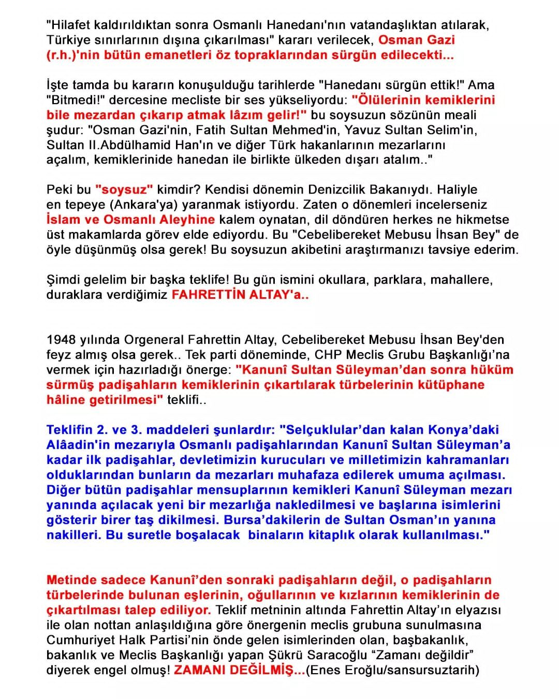
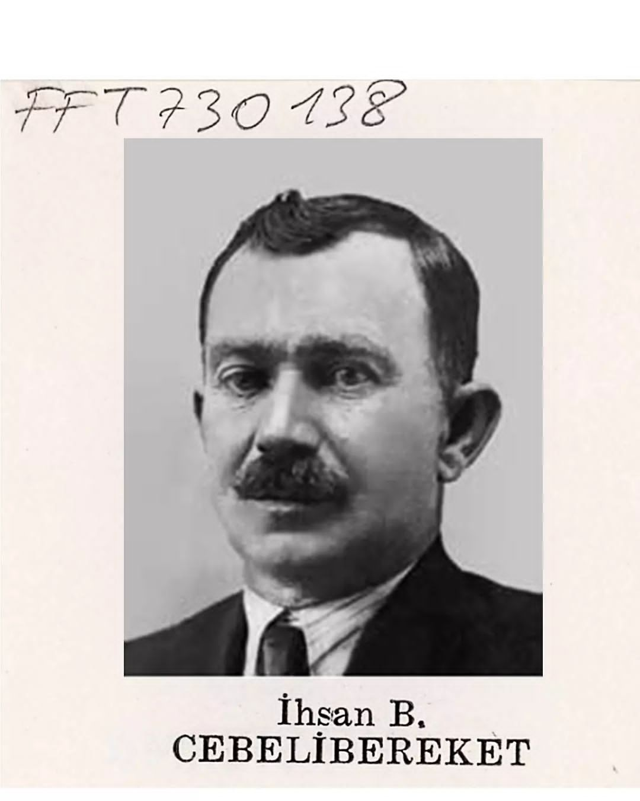
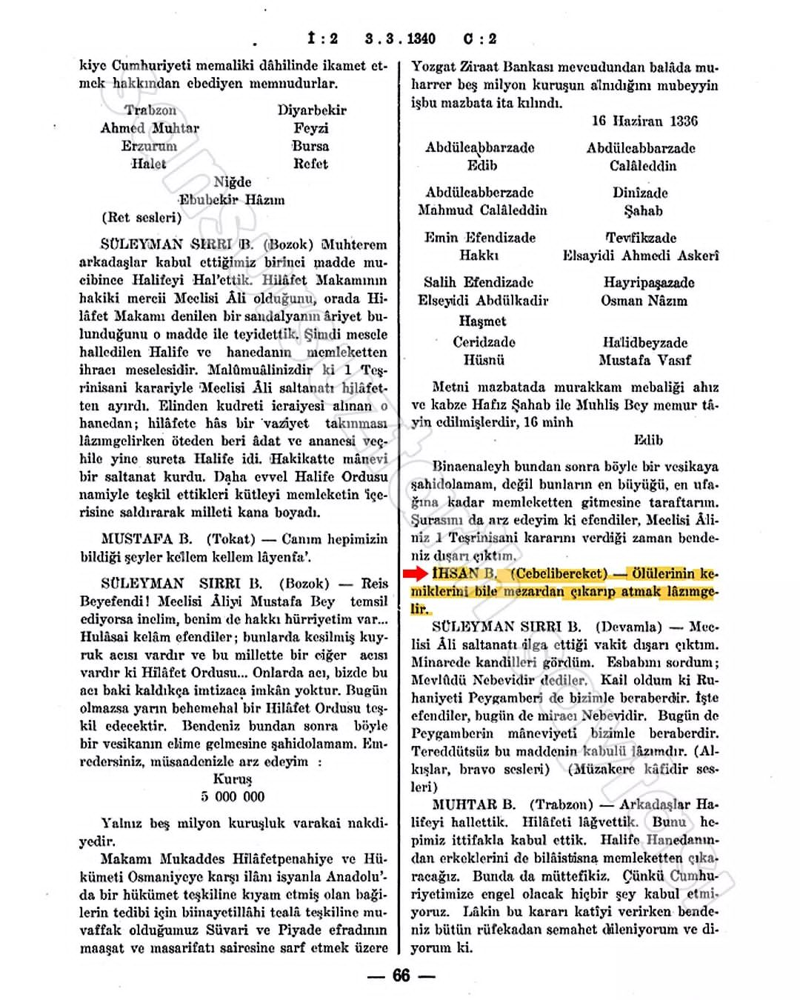
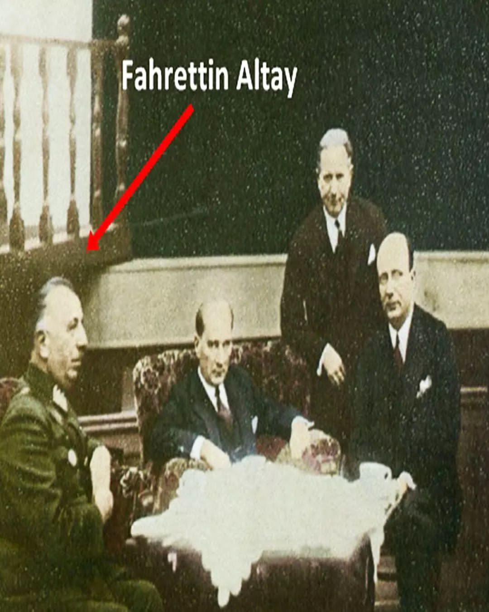
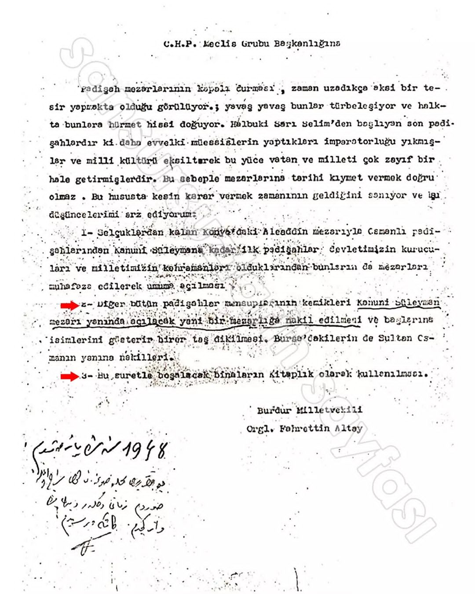

Anadolu Selçukluların payitahtı Konya’nın eşsiz tarih yadigarlarının pek çoğu korkunç tahriplere uğramıştır. Bunlar Fahrettin Paşa’nın Alâeddin Tepesi’nden verdiği asa işareti ile olmuştur” bilgisini verenKonyalı, Paşa’ya bu yıkımları kimsenin mani olamayacağını belirtmiştir.
Fahrettin Paşa zamanında sadece medreseler,türbeler, camiler değil, yazıları, nakışları, süsleri, taçları, serpuşları veşekilleri bakımından eşsiz mezar taşları ve kabristanlar da yok edilmiştir.İbrahim Hakkı Konyalı’nın aktardığına göre bu mezar taşları demiryolu yapımında kullanılmıştır. “Yıkım nedeniyle Selçukluların, Karamanoğullarının ve Osmanlıların çok kıymetli mezartaşlarından hemen hemen hiçbiri kalmamıştır. Saaddin-i Konevi ve Garipler Mezarlığı’nın bütün mezar taşları Paşanın emriyle kütür kütür kırılmış yol yapımında ve başka yapılarda kullanılmıştır
Kıymetli Selçuk mezar taşlarınınsayısı birkaç düzineyi geçmez. Bunların bir kısmı müzelerde yer almıştır”ifadelerini kullanan Konyalı en önemli yıkımın ise Alâeddin Camii’ndeki sultan mezarlarında yaşandığına dikkat çekmektedir. Halk arasında da ve araştırmacıların da kabul ettiği bilgiye göre ise Kılıçarslanın yaptırdığı Selçuk Hükümdarları Türbesi’ndeki 6 Selçuk Padişahının cenazeleri Paşa’nın emriyle kaldırtılarak şimdiki Dedebahçesi’nin arkasındaki Taçveziri Türbesi’nin önüne atılmıştır.
Kıymetli Selçuk mezar taşlarınınsayısı birkaç düzineyi geçmez. Bunların bir kısmı müzelerde yer almıştır”ifadelerini kullanan Konyalı en önemli yıkımın ise Alâeddin Camii’ndeki sultan mezarlarında yaşandığına dikkat çekmektedir. Halk arasında da ve araştırmacıların da kabul ettiği bilgiye göre ise Kılıçarslanın yaptırdığı Selçuk Hükümdarları Türbesi’ndeki 6 Selçuk Padişahının cenazeleri Paşa’nın emriyle kaldırtılarak şimdiki Dedebahçesi’nin arkasındaki Taçveziri Türbesi’nin önüne atılmıştır.
Kemikleri köpeklerin parçalaması üzerine çöpçüler tarafından toplanan kemiklerbilinmeyen bir yere atılmıştır. Böylece Anadolu’yu Türkleştiren, Müslüman yapan 6 Selçuk Hükümdarı’nın kemikleri böylece yok olup gitmiştir.





